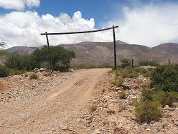

La localidad de Ovara se encuentra ubicada en el departamento de Humahuaca, es un pequeño pueblo con cultura y tradiciones muy marcadas en el tiempo.
La localidad de Ovara se encuentra ubicada en el departamento de Humahuaca, es un pequeño pueblo con cultura y tradiciones muy marcadas en el tiempo.
El pueblo brinda a los visitantes una experiencia agradable en relación al turismo rural comunitario.
La elaboración de queso de cabra es una de las actividades importantes en el pueblo.